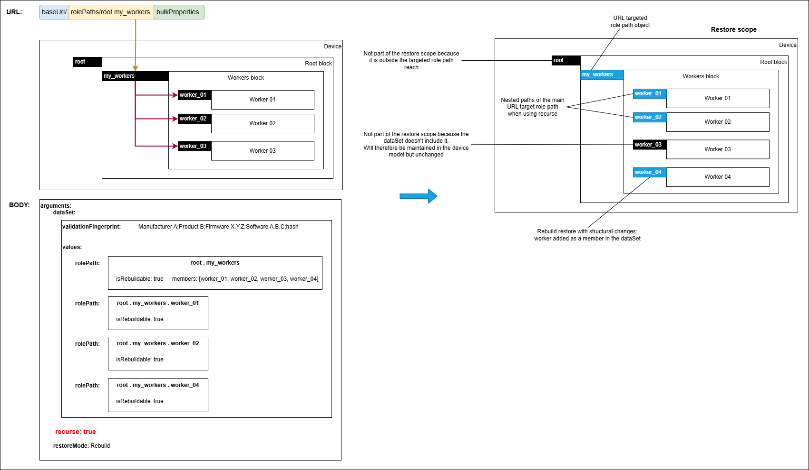
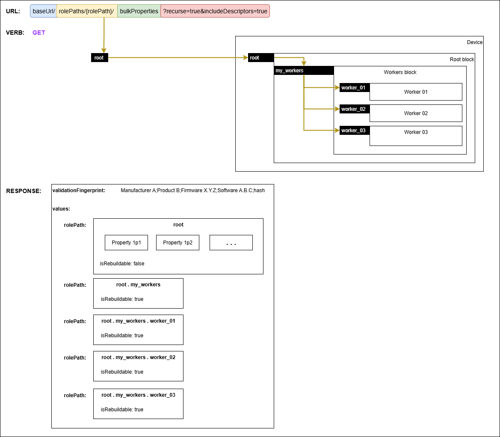
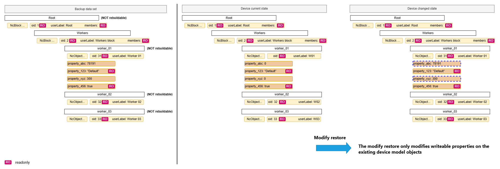
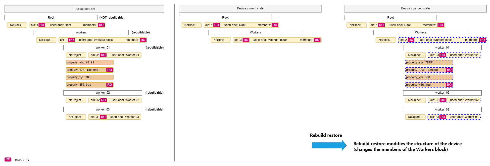

Backup & restore
Supporting backup & restore is a key feature of IS-14. To discuss the various possible combinations of backup and restore, this section utilizes terms explained in the Definitions section.
The Configuration API defines a bulkProperties endpoint which allows:
- Getting all the properties of a role path
- Setting bulk properties for a role path
- Validating bulk properties for a role path
These mechanisms are used for enabling backup and restore functionality and this section of the specification aims to cover the expectations, behaviour and requirements for the following scenarios:
- Performing a backup
- Performing a Modify restore
- Performing a Rebuild restore
Note that this does not mean that the backup & restore functionality can only be used in these scenarios.
Definitions
A device, for the purposes of this section, is a physical or logical entity that can be backed up and restored using the procedures described. It may or may not correspond to an IS-04 Device or IS-04 Node.
Backup data set is the set of data retrieved from a device using the backup procedures described. This is represented as an NcBulkPropertiesHolder object.
Backup validation fingerprint is an optional string in a backup data set that can be used to capture the various versions of the hardware, software and/or firmware that made up a device at the time the backup was performed. The format of the string is defined by the vendor and is opaque to other systems. This could contain information such as:
- Manufacturer key
- Product key
- Software versions
- Hardware revisions
- Backup response hash
- Timestamp
- Whether its a full device model backup or a partial backup
A device model in the context of this specification refers to all the objects and their properties which are exposed in the configuration API.
A full backup is a backup data set that includes all properties for all role paths of a device model. This is achieved by using the /bulkProperties endpoint.
A partial backup is a backup data set that includes only a subset of role paths of a device model. This is achieved by using the /bulkProperties endpoint.
A modified backup is a full backup or partial backup where the backup data set has been modified by a client. Examples of modified backups include: updating values of existing backup data set properties, adding/removing device model role paths from the backup data set.
General concepts
Role path objects within a backup data set contain a boolean property called isRebuildable.
If the object is a non-block object, isRebuildable means the object's readonly properties can be modified. However, structural properties such as classId, role, owner can only be changed when the containing parent block object is rebuildable.
If the object is a block, isRebuildable determines it can be modified as mentioned before but also that its members can be added or removed (new instances of rebuildable objects can be created in a rebuildable parent block).
When a parent block object is not rebuildable but a member child is rebuildable the implication is that the child cannot change its role within that block when being rebuilt through a restore.
Members of a rebuildable block which are not rebuildable cannot be removed.
The restore mechanism achieved by Setting bulk properties for a role path affects the device model by either rebuilding it or modifying it.
Validating a restore operation before applying it is achieved by Validating bulk properties for a role path. Devices MUST perform the same checks and offer the same response as if the restore was being applied without actually performing changes to the device model objects.
A restore operation or validating a restore operation creates a restore scope.
The restore scope consists of the intersection of objects contained in the role path targeted and any nested role paths if the recurse flag is set to true, and the objects offered in the backup data set.
If an existing device model object isn't included in the restore data set it is excluded from the restore scope, but will remain in the device model without any changes.
If an object is added or modified indirectly by the device as a consequence of a modification to an object already in the restore scope, then this object also becomes part of the restore scope.
If the restore operation includes structural block changes which add new object members, these also become part of the restore scope.
When performing a restore operation or validating a restore operation, devices MUST always generate ObjectPropertiesSetValidation entries for each object which is part of the restore scope.
 |
|---|
| Restore scope |
When performing a restore with the restore mode set to Modify, devices MUST only be allowed to make changes to existing writeable properties of existing device model objects and MUST NOT modify the device model in a structural way (cannot cause the addition or removal of objects from blocks). Furthermore, devices are RECOMMENDED to evaluate a Modify restore (validate if the restore can happen) even when the backup data set contains readonly properties, since writeable properties might result in the desired changes being applied, and the readonly properties will result in notices in the response returned.
When performing a restore with the restore mode set to Rebuild, devices MUST allow the following operations:
- make changes to existing writeable properties of existing device model objects
- add new members to rebuildable block objects by constructing new member objects (perform structural changes)
- remove existing members from rebuildable block objects by deconstructing the member objects (perform structural changes)
- reconstruct existing rebuildable objects (constructing fresh objects which can accept changes even to its readonly properties)
Rebuild restores can alter the structure of rebuildable device models in the following ways:
- an object can be removed from a rebuildable block when the backup data set used in the restore offers a collection of members for the block which does not include the object (the success of this operation MAY depend on the internal constraints of the device - some devices might have have some members which cannot be removed or a minimum number of members).
- an object can be added to a rebuildable block when the backup data set used in the restore offers a collection of members for the block which includes the new object and also includes a new entry for the role path of the new object with its properties (the success of this operation depends on the internal constraints of the device - devices are likely to check whether the new object class and role can be added to the block, whether they have all the necessary information to construct the new object, and might even check against a maximum number of members).
In the interest of interoperability even devices with no rebuildable device model objects MUST accept Rebuild restores only performing changes to writeable properties of device model objects whilst including notices for any other changes not supported by the device.
Devices implementing the restore workflow MUST follow these rules:
- after a restore operation devices MUST always contain valid objects (objects which have suitable values for each property within the current operating context) in their device models
- a restore operation modifying/rebuilding an object can use information from the backup data set provided or from an internal knowledge store
- devices MUST report the validation restore status of an object as
Okwhen a restore operation modifying/rebuilding the object using only the backup data set information is successful - devices MUST report the validation restore status of an object as
Okand MUST list properties which have benefited from internal knowledge store data in the notices property asWarningnotices when a restore operation modifying/rebuilding the object using internal knowledge store information is successful - if devices cannot find the required information for modifying/rebuilding a particular object in either the backup data set provided or an internal knowledge store, then they MUST report the validation restore status of the object as
Failedand also MUST populate thestatusMessageproperty with details of why the operation failed. Devices MAY also populate notices for the object properties which have contributed to the operation failing - devices MUST report the validation restore status of an object as
Failedwhen a restore operation modifying/rebuilding the object results in at least one error notice - devices MUST report the validation restore status of an object as
Okwhen a restore operation modifying/rebuilding an object results only in warning notices
Performing a backup
Creating a backup is performed by using the bulkProperties endpoint of a device alongside the Get verb.
Clients MUST issue requests using root as the rolePath and a recurse parameter with a value of true, in order to retrieve the whole device model (full backup). Devices MUST produce a response which contains a validationFingerprint and the values of all the role paths in the device model.
 |
|---|
| Performing a full backup |
An example response after performing a backup is provided as a snippet.
Clients MAY retrieve partial backups by choosing other role paths. The scope of backups MAY further be restricted by using a query parameter of recurse=false which will only include the properties of the targeted role path.
Devices are RECOMMENDED to populate dependencyPaths for objects which have dependencies on other role path objects when returning a backup data set (see NcObjectPropertiesHolder).
Devices are RECOMMENDED to populate allowedMembersClasses for rebuildable blocks when returning a backup data set (see NcObjectPropertiesHolder). This allows potential clients to determine which class ids can be used when modifying the members of these particular rebuildable blocks.
Performing a Modify restore
The following sections describe how a Modify restore can be performed using a backup data set as detailed in performing a backup.
Clients are RECOMMENDED to Validate the restore operation before attempting to apply the changes.
Clients MUST issue requests using root as the rolePath when attempting to validate applying the full backup data set against the device model.
Clients MUST include the following in the request body:
- the backup dataSet containing a collection of NcObjectPropertiesHolder entries with unique role paths
- a boolean
recurseargument (set totruefor validating the entire device model) - the
restoreModeargument (set toModifyin order to only allow changes to writeable properties)
A restore operation is performed through a Set request to restore a backup data set.
Clients MUST issue requests using root as the rolePath in order to restore the full backup data set to the device model.
Clients MUST include the following in the request body:
- the backup dataSet containing a collection of NcObjectPropertiesHolder entries with unique role paths
- a boolean
recurseargument (set totruefor targeting the entire device model) - the
restoreModeargument (set toModifyin order to only allow changes to writeable properties)
An example request is provided as a snippet.
Devices MUST make the necessary changes to all objects in the restore scope which have a validation restore status of Ok. If a device requires a system reboot in order to apply the restore, then it MUST perform this immediately after responding to the restore request.
An example restore response is provided as a snippet.
The diagram below captures how the Modify restore uses the backup data set to transition the device from its current device model to a changed state.
 |
|---|
| Modify restore |
Clients MAY perform a partial restore in the following ways:
- issuing a request where the
rolePathisn'troot, resulting in targeting a subset of the device model - using a
recurseargument set tofalsein the request body, resulting in targeting a single role path of the device model - removing role paths from the dataSet before using it in the request body, resulting in targeting a subset of the device model without the removed role paths
Performing a Rebuild restore
Rebuild restores are the only way to make structural changes to a device model. Structural changes are only allowed for rebuildable blocks.
The following sections describe how a Rebuild restore can be performed using a backup data set as detailed in performing a backup.
Clients are RECOMMENDED to Validate the restore operation before attempting to apply the changes.
Clients MUST issue requests using root as the rolePath in order to validate applying the full backup data set against the device model.
Clients MUST include the following in the request body:
- the backup dataSet containing a collection of NcObjectPropertiesHolder entries with unique role paths
- a boolean
recurseargument (set totruefor validating the entire device model) - the
restoreModeargument (set toRebuildin order to allow blocks to be repopulated with the same members as per the original device)
A restore operation is performed through a Set request to restore a backup data set.
Clients MUST issue requests using root as the rolePath in order to restore the full backup data set to the device model.
Clients MUST include the following in the request body:
- the backup dataSet containing a collection of NcObjectPropertiesHolder entries with unique role paths
- a boolean
recurseargument (set totruefor targeting the entire device model) - the
restoreModeargument (set toRebuildin order to allow blocks to be repopulated with the same members as per the original device)
An example request is provided as a snippet.
Devices MUST make the necessary changes to all objects in the restore scope which have a validation restore status of Ok. If a device requires a system reboot in order to apply the restore, then it MUST perform this immediately after responding to the restore request.
An example restore response is provided as a snippet.
The diagram below captures how the Rebuild restore uses the backup data set to transition the device from its current device model to a changed state. In this case the operation makes a structural change to the device model.
 |
|---|
| Rebuild restore |
Clients MAY perform a partial restore in the following ways:
- issuing a request where the
rolePathisn'troot, resulting in targeting a subset of the device model - using a
recurseargument set tofalsein the request body, resulting in targeting a single role path of the device model - removing role paths from the dataSet before using it in the request body, resulting in targeting a subset of the device model without the removed role paths